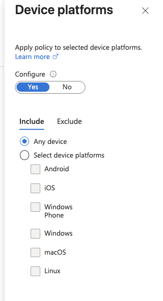
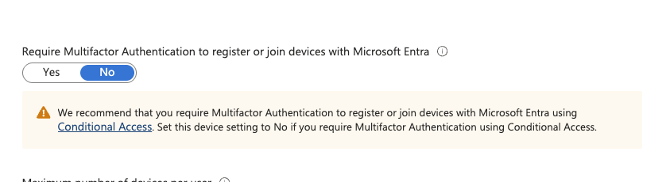
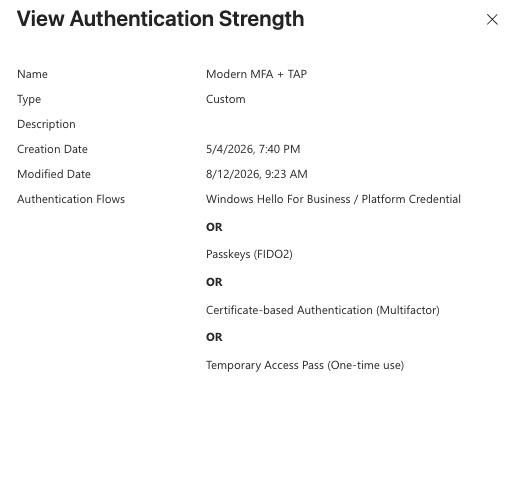
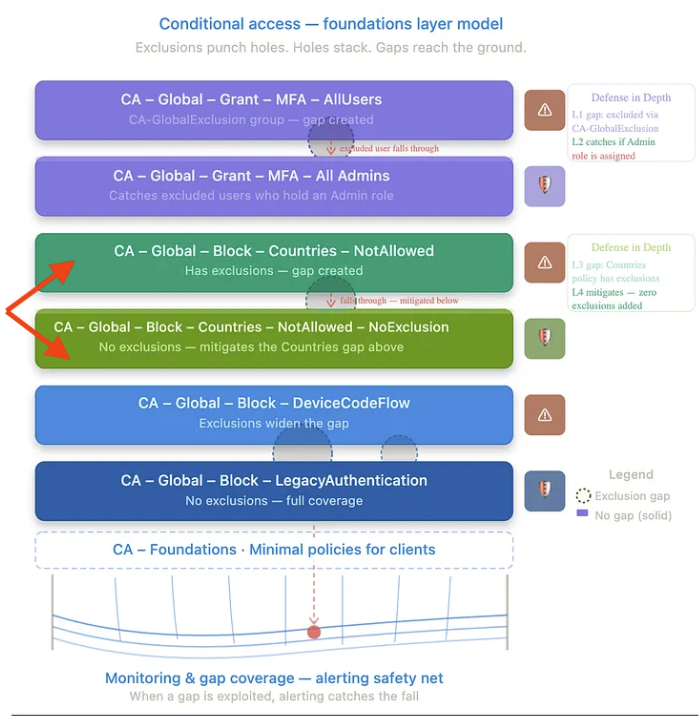
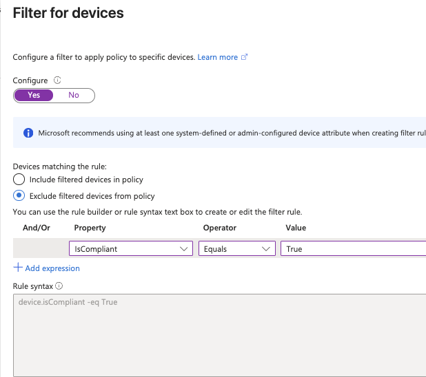
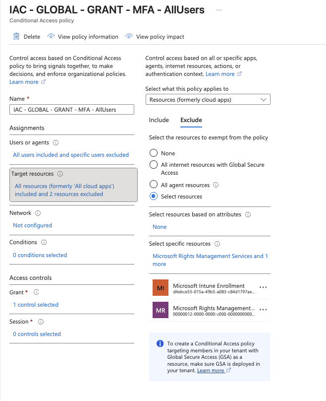

Originally published at conditionalaccess.tech
Conditional Access is deceptively easy to misconfigure. The portal gives you enough rope, the documentation is spread across a dozen Learn articles, and most mistakes don't produce an obvious error. They produce a policy that reports as enabled while silently skipping the users it should be covering, or quietly blocking the ones it shouldn't touch.
These ten mistakes come from real tenant audits. A few of them are subtle enough that even experienced admins leave them in place for months before something breaks. Work through this list against your own tenant.
CA has no user agent filtering. The Device Platform condition is what admins reach for, and it uses user agent strings the device itself provides. Microsoft documents this directly: user agent strings can be modified. Browser dev tools, thirty seconds, policy bypassed.
The second gap is the unmatched case. CA supports six named platforms: Android, iOS, Windows, macOS, Linux, Windows Phone. A session that doesn't report a recognisable platform string lands in the unmatched bucket. A policy targeting specific named platforms doesn't evaluate those sessions at all.
🛑 Microsoft Learn — Device Platform Condition: Device platform is identified using user agent strings. Because user agent strings can be modified, this information is not verified. Use device platform with Microsoft Intune device compliance policies or as part of a block statement. Conditional Access: Conditions — Device Platforms ↗
The fix: in the device platform condition, set Include to Any device and Exclude to your supported platforms. What's left, Windows Phone, Linux if you don't use it, and anything that doesn't report a recognised string, hits the block. More reliable than enumerating platforms in the Include tab because you're not betting on that list being exhaustive.

When you add multiple grant controls in a CA policy, the portal asks you whether to require all of the selected controls or one of them. Most admins read past it. The problem cuts both ways, and which operator is "wrong" depends entirely on what you're trying to enforce.
OR logic means the weakest control wins. If a policy has "Require compliant device OR MFA," a user on an unmanaged personal device can satisfy it with just MFA. The compliant device requirement is bypassed. For Hybrid Azure AD Joined or compliant device policies, this is the common error. Admins intend that users must have a managed device, but the OR gives unmanaged devices a path in. AND logic is usually correct for device-based access control.
OR — weakest control wins
Require: ONE of the selected
✗ Compliant device
✗ MFA
Unmanaged device + MFA = access granted
AND — all controls required
Require: ALL of the selected
✓ Compliant device
✓ MFA
Must have both. Unmanaged device = blocked.
OR is legitimately correct when you want to give users a choice of how they prove access, where each option is acceptable on its own. AND is correct when you want all conditions met. Check every policy with multiple grant controls. Know which operator you've selected and why.
Admins who want to restrict where devices can be registered or joined to Entra ID reach for the location condition in CA. It's a reasonable instinct. You want device registration to only happen from trusted networks. The problem is the Device Registration Service cannot be protected by a location-based grant control at all.
This was documented and MSRC-confirmed in research published by Fabian Bader (Cloudbrothers) following joint work with Dirk-jan Mollema at TROOPERS25 (VULN-153600). The Device Registration Service (01cb2876-7ebd-4aa4-9cc9-d28bd4d359a9) only supports "Require multifactor authentication" as a grant control. Location cannot be enforced. The portal won't error. The policy will appear configured, but the location condition is not evaluated for device registration.
🛑 MSRC Confirmed — Expected Behavior: An attacker with valid credentials can register a device in your Entra tenant from any network location, regardless of named location restrictions in your CA policies. The only CA control that applies to device registration is MFA. Trusted location, compliant network, and device compliance are not enforceable for this flow.
If you need to restrict device join beyond MFA, the controls live outside CA entirely: Intune enrollment restrictions by platform and ownership type, Autopilot profile assignment, and the Entra device settings page for who can join or register. None of these are location-aware. Location-based device registration restriction is a documented architectural gap, not a configuration problem you can fix by adjusting CA policy.
Under Devices in the Entra admin center there's a toggle: "Require Multifactor Authentication to register or join devices with Microsoft Entra." A lot of tenants have it set to Yes. A lot of those same tenants also have a CA policy requiring MFA for device registration. Both are on, both are enforcing, and nobody is sure which one is actually doing the work.
Microsoft's own portal tells you what to do here. The warning on that setting reads: "Set this device setting to No if you require Multifactor Authentication using Conditional Access." This is a legacy toggle, the same category as per-user MFA. It predates CA. It doesn't support Conditional Access conditions, named locations, auth strength, or any of the controls that make CA useful. Running both creates undefined behavior and makes troubleshooting device registration failures significantly harder.

⚠️ The correct state: Set "Require MFA to register or join devices" to No. Enforce MFA for device registration through a CA policy targeting the Register or join devices user action with Require authentication strength or Require MFA as the grant control. One mechanism, one place to audit, one place to troubleshoot.
The same logic applies to the broader device join restriction setting that limits which users can join or register. That's a directory-level control, not an access enforcement mechanism. CA's Require compliant device grant is what blocks app access for unenrolled devices. Don't use the directory restriction as a substitute for that.
This is the chicken and egg problem. You enforce phishing-resistant auth strength across the tenant. Users who don't have a FIDO2 key or Windows Hello for Business registered can't satisfy it. They can't register one without getting in first. Monday morning, helpdesk queue, accounts effectively locked.
The fix is a custom authentication strength that includes Temporary Access Pass as a one-time-use factor alongside your phishing-resistant methods. TAP is single-use by design, time-limited, and admin-issued. It gives the user exactly one path in to register their credential, then it's gone. The same custom strength covers account recovery when someone gets a new phone, loses their key, or needs to re-enroll without being completely locked out.
The custom strength isn't a weakening of the policy. TAP one-time-use is still a controlled, admin-gated credential. What it prevents is the scenario where phishing-resistant enforcement is technically correct but operationally breaks every new hire and every account recovery event because there's no designed path through.

⚠️ How to Scope It: Apply the custom auth strength (phishing-resistant methods plus TAP one-time-use) to the registration policy, not the production resource access policy. Production access requires FIDO2, WHfB, or CBA only. The custom strength is the on-ramp. Once the credential is registered, the user never needs TAP again unless they go through recovery.
Break-glass accounts need to be excluded from CA policies. The mistake is in how the exclusion is built. Two patterns show up repeatedly and both create problems the admin didn't intend.
Dynamic group exclusion is a security flaw. Dynamic groups evaluate a membership rule. An attacker who can enumerate the directory can read that rule, identify the attribute value that qualifies for membership, and potentially manipulate their own account to satisfy it. The exclusion becomes a bypass vector. Whatever attribute drives the dynamic rule — department, job title, extension attribute — if it's writable by a broad enough population or discoverable through normal enumeration, it's a target. Break-glass exclusions built on dynamic groups are exclusions an attacker can engineer their way into.
Role-based exclusion expands beyond break-glass. Excluding the Global Administrator role from a sensitive CA policy sounds like it scopes to break-glass. It doesn't. Every user who activates Global Admin through PIM is now excluded from that policy for the duration of their activation. The exclusion scope grows with every PIM activation across the tenant, not just for the two accounts you intended. Users who were never meant to bypass that policy are bypassing it the moment they elevate.
🛑 Correct Pattern: Two break-glass accounts. Both in a static assigned security group. That group protected by a Restricted Management Administrative Unit so only a tightly controlled set of admins can modify membership. The CA exclusion targets the group, not a dynamic rule, not a role. Membership is fixed, auditable, and not enumerable into a bypass. Monitor the group for any membership changes and alert on any break-glass sign-in.
The geo-block policy looks clean: block all countries except the ones you operate in. Then someone adds an exclusion for a group of users who travel internationally, or a service account that needs to authenticate from a third-party system in a blocked region. The exclusion grows. Nobody audits it.
The result is a set of users who are completely outside the geo-block with no compensating control. They're excluded from the location restriction, but there's no policy requiring them to satisfy MFA, device compliance, or any other grant control when they authenticate from a blocked country. They're just exempt. Fully.
⚠️ The Fix: Exclusions from a geo-block policy must be paired with a separate policy that applies additional scrutiny to those users. Require MFA with no location condition on that population, so wherever they authenticate from, there's still a control in place. Exemption from location restriction is not the same as exemption from all controls.
Also worth auditing: how broad is the "allowed countries" list? Tenants that operate in five countries often have fifteen in the allowed list. Named location hygiene is part of the same problem.

These two controls behave very differently when a device fails to meet conditions. The key difference is what the user gets told about it.
Require compliant device as a grant control produces an error message when compliance fails. The user sees their device isn't compliant and gets a remediation path: enrol the device, fix the compliance issue. Internal users who should fix their device posture will do so if they're told what's wrong.
Device filter used as a condition gives the user nothing. If the filter matches (or doesn't match, depending on configuration), access is blocked with no explanation. No remediation path is shown. For privileged access workstations or external-facing resources where you don't want to reveal policy logic, that's intentional. For general corporate access where users need to know what to do, it's the wrong tool.
Compliant device grant — tells the user why
Error: Device not compliant
Remediation path shown
Good for: internal users who should fix compliance
Device filter — silent block
Error: Access blocked. No reason given.
No remediation path
Use deliberately for PAW / sensitive resources

Use device filter for high-security resource access where you explicitly don't want to hint at the policy. Use the compliant device grant control where you want users to self-remediate. Using device filter everywhere, including for routine corporate access, means your helpdesk gets calls from users who have no idea what's wrong.
SIF loops are a common support call that traces back to one misconfiguration: "Every time" applied to the wrong app. Microsoft documents the warning directly: using sign-in frequency to require reauthentication every time, without multifactor authentication, may result in sign-in looping for your users.
The scope matters. For the Azure portal and Entra admin center, Microsoft explicitly recommends time-based SIF or authentication context on PIM activation, not "Every time." An admin mid-session loses context on the re-authentication prompt and has to start the task again. For M365 apps, time-based SIF is the recommendation. "Every time" is valid for specific scenarios: PIM elevation, Intune enrollment, Azure Virtual Desktop, risky sign-ins. Outside those specific cases it creates friction that serves no security purpose.
SIF controls when the next prompt fires. It has no effect on an existing token's validity. Tightening it as a response to token theft doesn't close the window, it just prompts the legitimate user more often.
⚠️ Microsoft Learn: Before Enabling SIF: If "Remember MFA on trusted devices" is enabled in your tenant, disable it before configuring sign-in frequency. Running both together prompts users unexpectedly. Microsoft documents this as a prerequisite, not a recommendation. Microsoft Learn: Conditional Access session lifetime policies ↗
ℹ️ Fabian Bader — CAE Research, Scenario 15: Applying any SIF policy to a CAE-enabled app collapses the extended access token lifetime from up to 28 hours back to the default 60–90 minutes. The token keeps all CAE revocation capabilities — account disabled, password changed, high-risk sign-in still revoke it in near-real time. But the extended lifetime benefit is gone. Microsoft documents the same behavior: "the time between credential prompts for a client is the token lifetime that ranges from 60–90 minutes plus the sign-in frequency interval." If you set a 1-hour SIF, the actual minimum prompt cadence is 60–90 minutes, not 1 hour. Cloudbrothers: Continuous Access Evaluation — Scenario 15 ↗
A user sends an email with a sensitivity label that applies encryption. The recipient gets an .rpmsg attachment instead of readable content. They can't open it. The error they see is unhelpful. They call the helpdesk. Nobody traces it back to CA.
The specific conditions that cause this: a CA policy scoped to all cloud apps includes Microsoft Rights Management Services, the recipient is a guest or external user, and there is no cross-tenant MFA trust configured for their home tenant. When the recipient tries to open the encrypted content, the RMS decryption call hits the CA policy, MFA is required, but the external user's existing MFA claim from their home tenant isn't trusted. They can't satisfy the challenge. The content stays wrapped.
Microsoft Rights Management — CA Reference
| App Display Name | App ID | Failure Condition |
|---|---|---|
| Microsoft Rights Management Services | 00000012-0000-0000-c000-000000000000 | CA all cloud apps policy requires MFA, external user's home tenant MFA claim not trusted. Decryption fails, content surfaces as rpmsg. |
🛑 Two Paths to Fix This: Option 1 — CA exclusion: Create a CA policy that excludes Microsoft Rights Management Services (00000012-0000-0000-c000-000000000000) from the scope of any policy requiring MFA for all cloud apps. Target the exclusion by app ID under the cloud apps condition. Microsoft Intune Enrollment is also worth excluding at the same time. Option 2 — Cross-tenant MFA trust: Configure inbound cross-tenant access settings to trust MFA claims from the external user's home tenant. When the trust is in place, the external user's completed MFA satisfies the CA requirement and the decryption call succeeds. For external users across multiple organisations, this is the more scalable fix. Microsoft Learn: Entra configuration for encrypted content ↗
